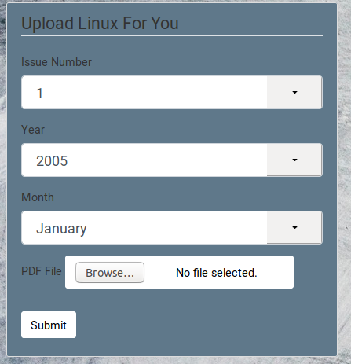
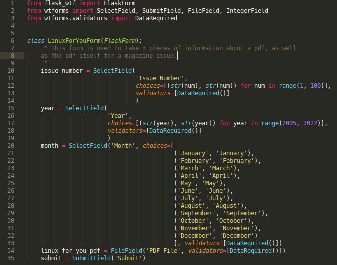
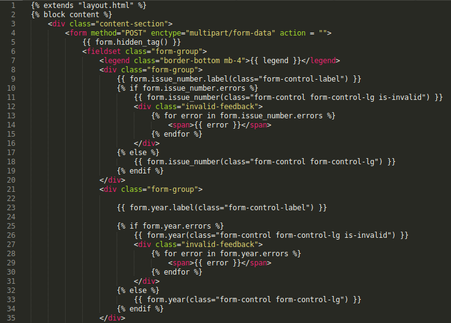

LINUX FOR YOU
{% if current_user.is_authenticated %} Upload Linux For You{% endif %}
 }} "”Tweet")
Issue {{ issue.issue_number }}, {{ issue.season }} {{ issue.year }}
--> Click to Read <--
Flask apps can serve up pdfs! The app consults a SQL database for the issue with the highest number and displays it here, above. There is also an archive over here, where visitors can read or download past issues. Twitter and Facebook share buttons are automatically generated for each issue. I chose a magazine about Linux whose issues are available for free online to demonstrate this.
If a user is logged in, they can upload more issues. The code takes the pdf, creates a jpg of the cover page for the image link, renames the pdf and jpg files and places them in a special folder, and stores all necessary information about the issue in the SQL database -- issue number, year, month, as well as the filenames and locations of the pdf and jpg files on the server.
Click here for the Linux For You Archives

Here's a screenshot of the interface a logged-in admin would see when uploading an issue.

Here's a look at the Form class which is used to take information from the admin about the pdf, and the pdf itself.

Here's the first 35 lines of code of the html template for the interface.